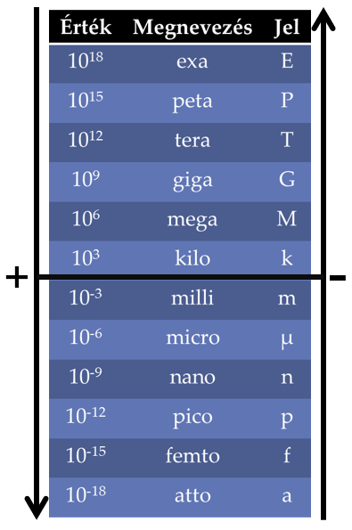

SI nemzetközi mértékegység rendszer
Az SI a Systéme International kifejezés rövidítése. Jelentése: nemzetközi rendszer.
Alapegységek: a méter a hosszúság, a kilogramm a tömeg, a másodperc az idő, az amper a villamos áramerősség, a kelvin a hőmérséklet, a kandela a fényerősség, a mól az anyagmennyiség mértékegysége.
Kiegészítő egységek: a radián a síkszög, a szteradián a térszög mértékegysége.
